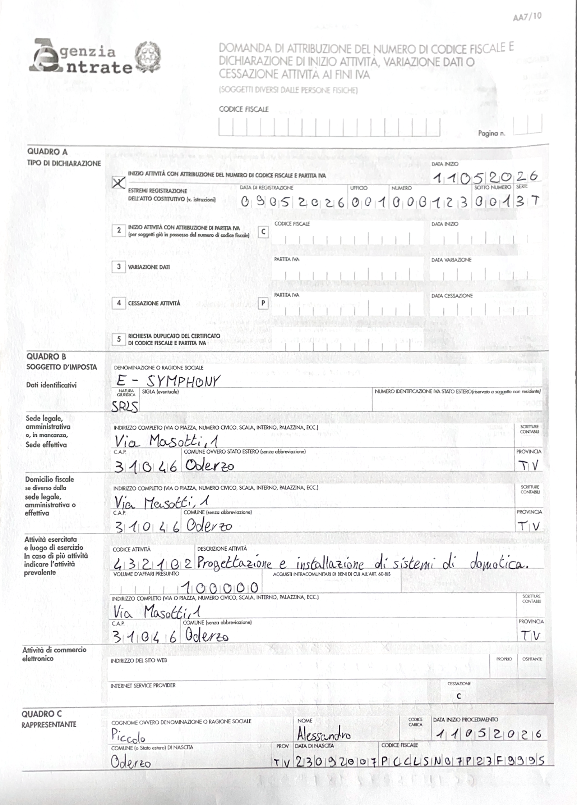
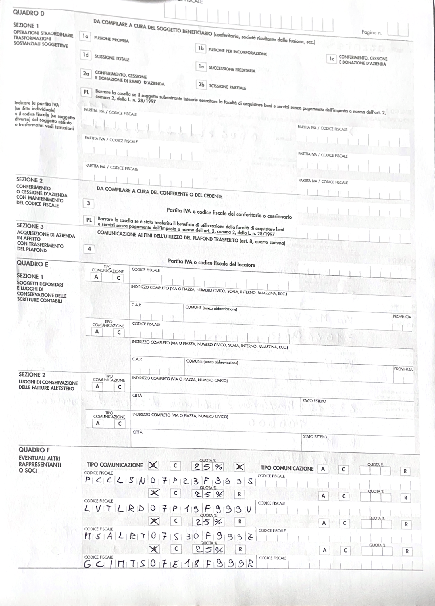
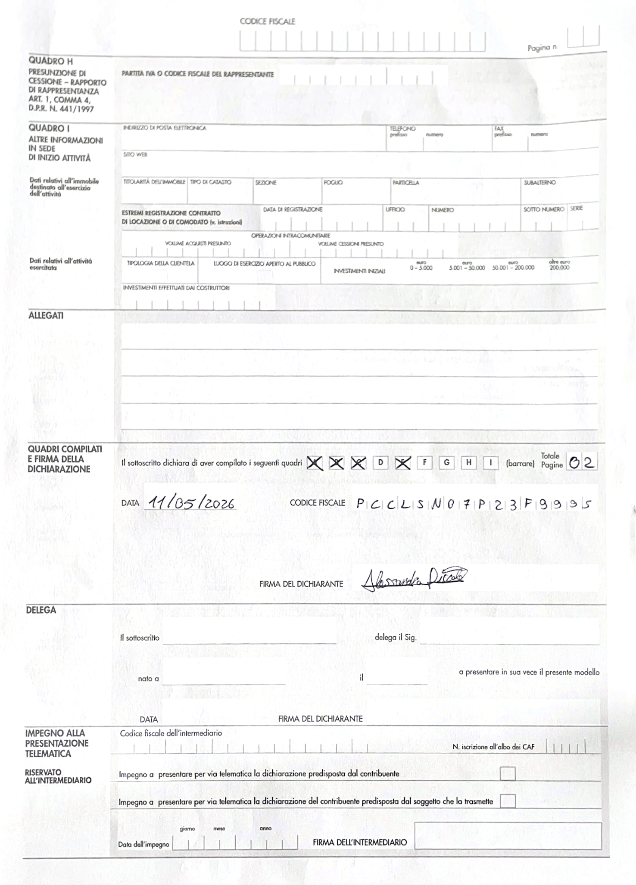

Scelta della forma giuridica: S.r.l.s.
La scelta di costituire E-Symphony sotto forma di Società a Responsabilità Limitata Semplificata (S.r.l.s.) è stata operata sulla base di una valutazione strategica che coniuga la tutela dei soci con l'efficienza dei costi operativi.
1. Responsabilità
La caratteristica fondamentale della S.r.l.s. è l'autonomia patrimoniale perfetta.
- Tutela del patrimonio personale: la responsabilità è limitata al capitale sociale conferito.
- Sicurezza per gli investimenti: questa forma garantisce una barriera tra rischi d'impresa e finanze personali.
2. Costi
La S.r.l.s. è stata selezionata per ottimizzare la struttura dei costi, specialmente nelle fasi iniziali di startup.
- Costi di costituzione ridotti: la legge prevede l'esenzione dagli onorari notarili.
- Gestione burocratica: rappresenta una soluzione più semplice rispetto ad altre forme societarie.
- Scalabilità: in futuro sarà possibile trasformare la S.r.l.s. in una S.r.l. ordinaria.
Profilo Contabile e Fiscale: E-Symphony S.r.l.s.
E-Symphony S.r.l.s. è soggetta alla normativa delle società di capitali.
1. Regime Contabile
- Contabilità Ordinaria: per le S.r.l.s. è obbligatoria la contabilità ordinaria.
- Deposito Bilancio: il bilancio deve essere approvato dall'assemblea dei soci e depositato presso il Registro delle Imprese.
2. Regime Fiscale
- IRES: aliquota ordinaria del 24% sull'utile ante imposte.
- IRAP: aliquota standard del 3,9%.
- IVA: E-Symphony fattura con applicazione dell'IVA e liquida l'imposta periodicamente.
3. Registri Obbligatori
- Libro giornale.
- Libro degli inventari.
- Libro dei soci.
- Registro acquisti, vendite e corrispettivi.
Modello standard di Atto Costitutivo e Statuto della
Società a Responsabilità Limitata Semplificata
(In vigore dal 28 giugno 2013)
L'anno 2026, il giorno 09 del mese di maggio in Oderzo, innanzi a me notaio sono presenti i soci Piccolo Alessandro, Gici Matias, Lovat Leonardo e Maso Alberto.
1. I comparenti costituiscono una società a responsabilità limitata semplificata sotto la denominazione “E-SYMPHONY società a responsabilità limitata semplificata”, con sede in Oderzo.
2. La società ha per oggetto attività di progettazione, installazione, integrazione e manutenzione di sistemi di domotica, automazione intelligente, monitoraggio energetico e soluzioni di efficienza energetica.
3. Il capitale sociale ammonta a € 5.000 e viene sottoscritto in quote uguali dai soci.
4. L'amministrazione della società è affidata a uno o più soci scelti con decisione dei soci.
5. Viene nominato amministratore il signor Piccolo Alessandro.
Richiesta di Partita Iva all'Agenzia delle Entrate



Richiesta PEC
La Posta Elettronica Certificata (PEC) è uno strumento attraverso il quale è possibile inviare email aventi lo stesso valore legale di una raccomandata con ricevuta di ritorno.
Inoltre, oltre a certificare la data di trasmissione, con la funzione di firma digitale garantisce anche il contenuto della comunicazione e permette di dimostrare la notifica di lettura del messaggio.
Per richiedere la PEC E-Symphony ha scelto Aruba.it come gestore di posta elettronica certificata.
È stata scelta la PEC STANDARD che ha un costo di 5,00 € + IVA/1° anno (al rinnovo 9,90 € + IVA/anno).
L'indirizzo PEC di E-Symphony è il seguente: e-symphony@pec.it
Bilancio Previsionale Triennale
Conto Economico a stati comparati
Schema art. 2425 Codice Civile – forma abbreviata adattata al business plan
| Voce | Anno 1 | Anno 2 | Anno 3 |
|---|---|---|---|
| A) VALORE DELLA PRODUZIONE | |||
| 1) Ricavi delle vendite e delle prestazioni | 100.000 | 140.000 | 180.000 |
| 5) Altri ricavi e proventi | 2.000 | 3.000 | 4.000 |
| Totale valore della produzione (A) | 102.000 | 143.000 | 184.000 |
| B) COSTI DELLA PRODUZIONE | |||
| 6) Per materie prime, sussidiarie e merci | 28.000 | 38.000 | 48.000 |
| 7) Per servizi | 12.000 | 16.000 | 20.000 |
| 8) Per godimento beni di terzi | 9.600 | 9.600 | 9.600 |
| 9) Per il personale | 24.000 | 36.000 | 48.000 |
| 10) Ammortamenti e svalutazioni | 4.000 | 5.000 | 6.000 |
| 14) Oneri diversi di gestione | 1.500 | 2.000 | 2.500 |
| Totale costi della produzione (B) | 79.100 | 106.600 | 134.100 |
| Differenza tra valore e costi della produzione (A-B) | 22.900 | 36.400 | 49.900 |
| 17) Interessi e altri oneri finanziari | (1.000) | (1.500) | (2.000) |
| Risultato prima delle imposte | 21.900 | 34.900 | 47.900 |
| 20) Imposte sul reddito | 6.500 | 10.500 | 14.500 |
| 21) UTILE DELL’ESERCIZIO | 15.400 | 24.400 | 33.400 |
Stato Patrimoniale a stati comparati
Schema art. 2424 Codice Civile – forma abbreviata
Attivo
| Voce | Anno 1 | Anno 2 | Anno 3 |
|---|---|---|---|
| A) CREDITI VERSO SOCI | 0 | 0 | 0 |
| B) IMMOBILIZZAZIONI | |||
| I – Immobilizzazioni immateriali | 5.000 | 7.000 | 9.000 |
| II – Immobilizzazioni materiali | 13.000 | 18.000 | 23.000 |
| III – Immobilizzazioni finanziarie | 0 | 0 | 0 |
| Totale immobilizzazioni (B) | 18.000 | 25.000 | 32.000 |
| C) ATTIVO CIRCOLANTE | |||
| I – Rimanenze | 6.000 | 8.000 | 10.000 |
| II – Crediti verso clienti | 12.000 | 18.000 | 24.000 |
| IV – Disponibilità liquide | 9.000 | 18.000 | 34.000 |
| Totale attivo circolante (C) | 27.000 | 44.000 | 68.000 |
| TOTALE ATTIVO | 45.000 | 69.000 | 100.000 |
Passivo e Patrimonio Netto
| Voce | Anno 1 | Anno 2 | Anno 3 |
|---|---|---|---|
| A) PATRIMONIO NETTO | |||
| I – Capitale sociale | 5.000 | 5.000 | 5.000 |
| VIII – Utili portati a nuovo | 0 | 15.400 | 39.800 |
| IX – Utile dell’esercizio | 15.400 | 24.400 | 33.400 |
| Totale patrimonio netto (A) | 20.400 | 44.800 | 78.200 |
| C) TRATTAMENTO FINE RAPPORTO | 1.000 | 2.500 | 4.000 |
| D) DEBITI | |||
| Debiti verso banche | 15.000 | 14.000 | 10.000 |
| Debiti verso fornitori | 6.000 | 5.500 | 5.000 |
| Debiti tributari | 1.600 | 1.700 | 1.800 |
| Debiti verso istituti previdenziali | 1.000 | 500 | 500 |
| Debiti diversi | 0 | 0 | 500 |
| Totale debiti (D) | 23.600 | 21.700 | 17.800 |
| TOTALE PASSIVO E PATRIMONIO NETTO | 45.000 | 69.000 | 100.000 |
Conclusioni
Sintesi e valutazione complessiva del piano economico-finanziario
Valutazione complessiva
Le previsioni evidenziano un'impresa economicamente sostenibile, in crescita costante e con una struttura finanziaria progressivamente solida.